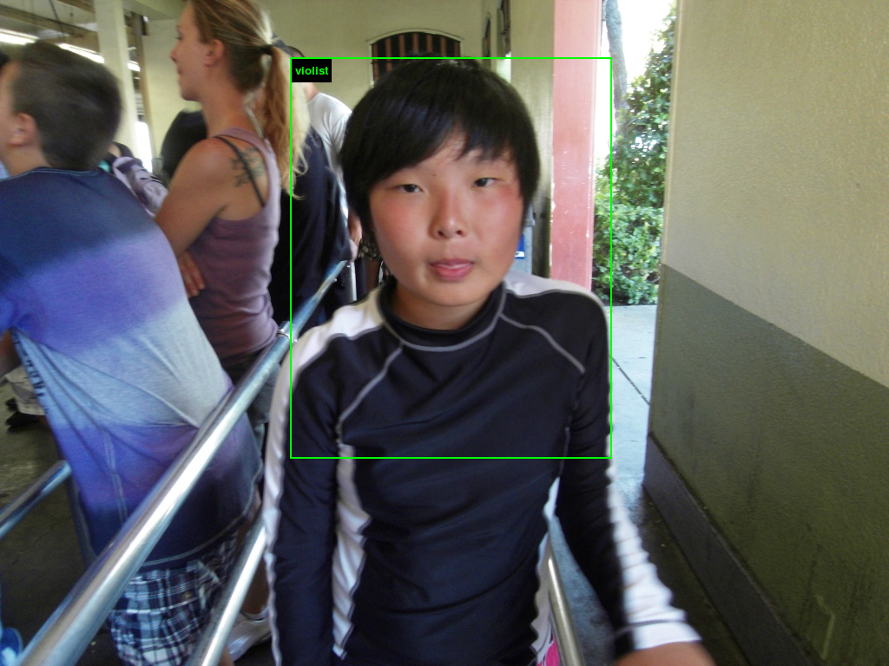
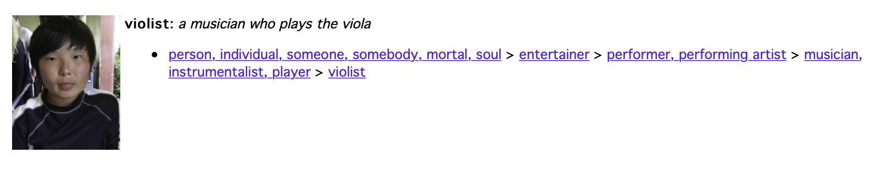
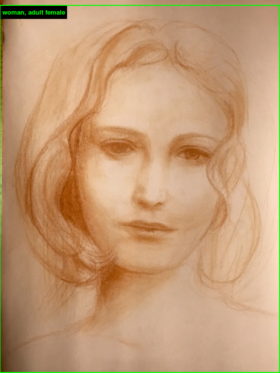
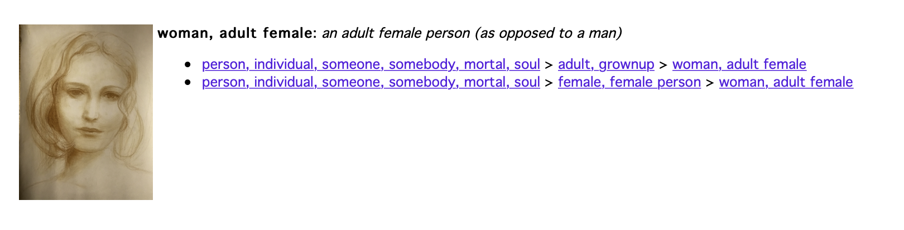
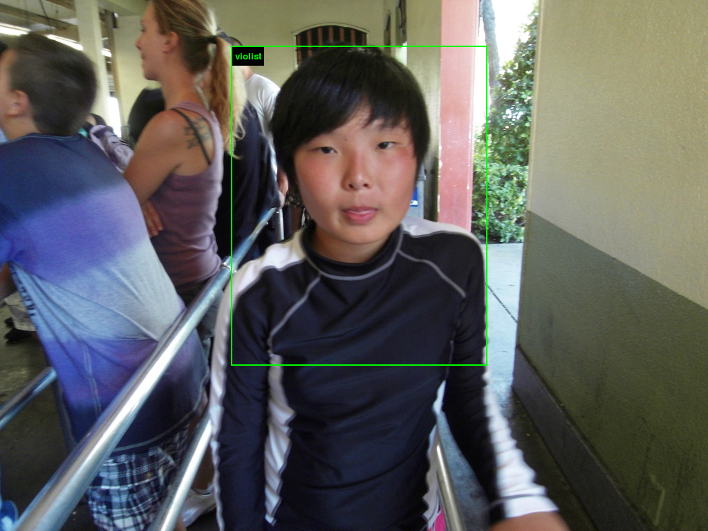
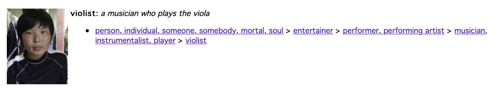
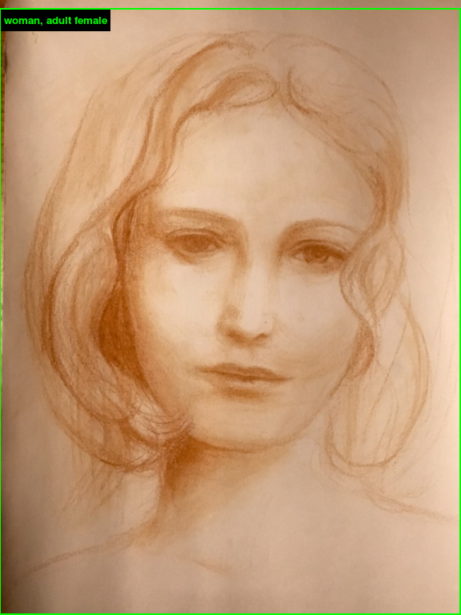
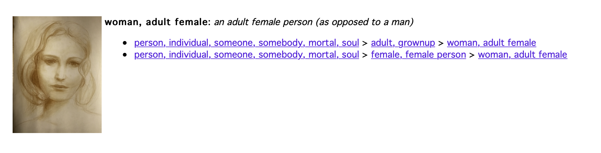

I uploaded a normal selfie of myself as well as a picture of myself taken when I was 11. My worry was initially about being labeled something racist because I’m asian, but the site just labeled the selfie of my current self as “Adonis” (a young handsome male). I’m okay with that. The result for my 11 year old portrait was really funny: it labeled me a “violist”, I’m guessing becuase I look like a scrubby little asian kid with messy hair in the picture. This obviously draws on Asian stereotypes but I’m not offended by it and I find it funny.
Just as an experiment of how well the site works I also uploaded a drawing I drew of a woman’s face, and the site was able to recognize it as a “woman/adult female person”. Nothing super interesting but pretty cool to see that it works on drawings too.
Obviously the moral of the site is to consider the implications of the future of AI on society and how it reflects human bias . The author of the NYT article said “The fundamental truth is that A.I. learns from humans — and humans are biased creatures”. Which makes it terrifying to think about how AI will only strengthen negative human stereotypes against each other. I don’t think there are any perfect solutions to such an insidious problem. But just because we can’t do everything it doesn’t mean we should do nothing.
 






